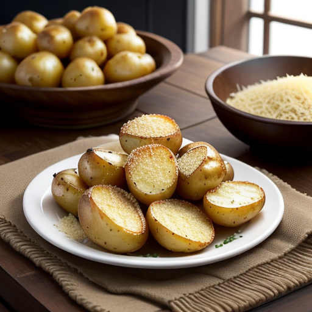

Roasted Garlic Parmesan Potatoes

Roasted Garlic Parmesan Potatoes: A delectable side dish featuring crispy, golden potatoes infused with minced garlic, Parmesan cheese, and rosemary. Easy to prepare and perfect for any meal, these potatoes offer a tantalizing blend of flavors and textures that will leave your taste buds craving more.
Ingredients:
- • 2 pounds of potatoes (e.g., Russet or Yukon Gold), washed and cubed
- • 4 cloves of garlic, minced
- • 1/4 cup grated Parmesan cheese
- • 2 tablespoons olive oil
- • 1 teaspoon dried rosemary
- • Salt and pepper to taste
Instructions:
- Preheat your oven to 425°F (220°C).
- In a large bowl, mix the cubed potatoes, minced garlic, olive oil, dried rosemary, salt, and pepper until the potatoes are well coated.
- Spread the potato mixture in a single layer on a baking sheet.
- Roast in the preheated oven for about 30-35 minutes or until the potatoes are golden brown and crispy.
- Sprinkle the grated Parmesan cheese over the roasted potatoes and return them to the oven for another 5-7 minutes, or until the cheese is melted and slightly crispy.
- Serve hot, garnished with additional Parmesan cheese and fresh herbs if desired.